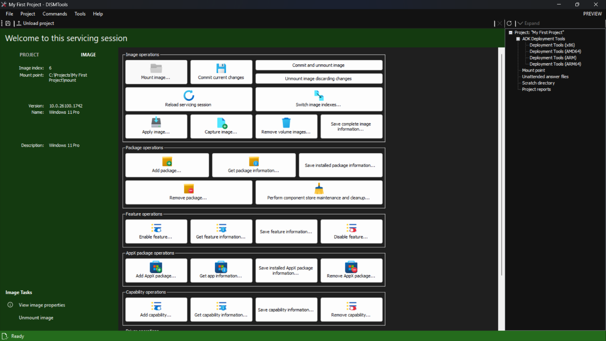

Quer você seja novo em manutenção de imagens ou venha de outros programas, este guia ajudará você a aprender as ferramentas de implantação do Windows e configurar sua bancada de implantação.
Compreendendo as ferramentas de implantação e configuração do Windows
Para começar, precisamos voltar aos dias do Windows Vista para entender suas ferramentas de configuração e implantação. Não se preocupe, esta não é uma seção longa.
Antes deste sistema operacional, o CD de instalação CD continha todos os arquivos da instalação do Windows de forma comprimida, mas não continha uma instalação inteira do Windows em um único arquivo. Por exemplo, cada arquivo do 3D Pinball era comprimido em seus próprios arquivos. Isso significava que você precisava do CD o tempo todo durante o processo de Configuração, até o final. Se você o ejetasse durante a instalação, ele pediria para inseri-lo novamente:

Transferências constantes do CD para o HDD do computador também faziam a instalação demorar.
Diante dessas desvantagens, a Microsoft começou a trabalhar em um novo sistema de configuração durante o desenvolvimento do Windows Vista (codinome Longhorn) que instalaria o Windows em menos de 15 minutos:
Myers says the goal is for an unattended setup of Longhorn to take less than 15 minutes from start to finish. Compared to the 45- to 60-minute install time for Windows XP, that's amazing, though Longhorn pre-alphas are still quite slow.
— Paul Thurrott, "Longhorn Setup and Deployment Strategies"
Isso resultou no formato de arquivo WIM, que é um único arquivo contendo uma ou mais instalações completas do Windows. Isso significa que o computador precisa realizar transferências da mídia de instalação para o HDD apenas uma vez: durante a expansão da imagem.
Obviamente, por você estar trabalhando com novos formatos e padrões de implantação, a tecnologia existente não funcionaria, portanto a Microsoft incluiu um conjunto de ferramentas de implantação, gerenciamento e manutenção como parte do AIK do Windows Vista.
Durante o desenvolvimento do Windows 7, a Microsoft ouviu o feedback dos clientes e consolidou todas essas ferramentas em um único aplicativo que também seria integrado ao sistema operacional. Chamado DISM, esse programa é capaz de executar todos os recursos encontrados nos programas anteriores do Windows Vista, e muito mais, graças às melhorias feitas em versões posteriores do Windows.
O DISM é uma utilidade de linha de comando com uma sintaxe que pode parecer difícil. No entanto, há algumas interfaces gráficas disponíveis, sendo esta uma delas.
O que o DISMTools oferece a você
Como uma interface para o DISM, o DISMTools oferece alguns recursos interessantes:
- É o primeiro projeto com interface baseada em projetos, permitindo melhor organização do seu trabalho
- Fornece informações detalhadas com rapidez e oferece ferramentas que auxiliam nas suas tarefas de gerenciamento. Mais sobre isso pode ser encontrado na Etapa 2 deste tour
- Oferece ferramentas integradas para implantação e testes de imagens. Mais sobre isso pode ser encontrado na Etapa 3 deste tour
Nesta Etapa, você aprenderá as tarefas básicas.
Criando seu primeiro projeto e montando sua primeira imagem do Windows
Para criar seu primeiro projeto, basta clicar no link "Novo projeto..." na tela inicial, ou ir em Arquivo > Novo projeto...
A seguinte caixa de diálogo será exibida:

Digite o nome e o local do seu projeto. Você pode ser criativo com o nome. Em seguida, clique em OK.
Depois que o projeto for criado, você será recebido pela visualização do projeto:

Antes de fazer qualquer coisa com seu projeto recém-criado, você precisa montar uma imagem do Windows. Para isso, clique no botão Montar imagem.... Você verá a seguinte caixa de diálogo:

Especifique uma imagem do Windows, o local para montá-la e o índice. Você pode configurar opções adicionais, mas elas não são necessárias na maioria dos casos.
Como obtenho uma imagem do Windows?
As imagens do Windows geralmente são encontradas no arquivo install.wim, que está localizado na pasta sources do seu meio de instalação do Windows. Você também pode encontrá-las no arquivo install.esd, que é uma versão comprimida do arquivo WIM. Esse arquivo costuma ficar no mesmo local que o WIM.
Depois de copiá-lo, especifique-o na caixa de diálogo, assim:

Configure as demais opções mencionadas anteriormente e clique em OK. Em seguida, aguarde a conclusão da operação.
Durante o uso do DISMTools, você verá este painel de progresso. Aqui, você pode visualizar os logs de operação e a saída do DISM. Clique em um dos links abaixo para ver as duas seções:

|
|
Você pode alternar entre as seções clicando nos botões no canto inferior esquerdo.
Após montar sua imagem, você retornará à visualização do projeto, mas com mais itens para explorar:
Concluiu. E agora?
Após montar sua imagem, você pode continuar de 2 maneiras:
- Por conta própria, ou
- Com ajuda das demais Etapas deste tour
Se quiser continuar com o tour, clique no botão da Etapa 2 no canto superior direito para ver a versão em texto.
Se preferir continuar o tour no formato de vídeo, clique aqui.